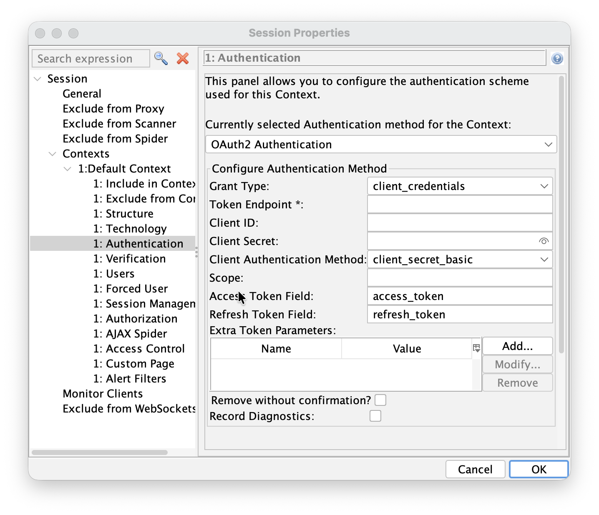

OAuth2.0 support has landed in Authentication Helper
We’re pleased to announce the first version of OAuth2.0 support in the Authentication Helper add-on. The new authentication method is configured against a single token endpoint and handles the non-interactive grant types that work well with automated and CI-driven scanning:
- client_credentials (the default)
- password (resource owner password credentials)
Note that we recommend only using this new method for authenticating to APIs (where relevant), not for web apps that use OAuth2.0.
If you have a web app that has an authentication flow that uses web based login screens then you should continue to use either Browser Based Authentication or Client Script Authentication, even if those screens drive OAuth2.0 in the background. These options are needed in order to explore your app with the modern spiders.
How to configure it
Update to the latest version of the Authentication Helper add-on add-on, or use the latest weekly release.
Desktop UI
- Double click on the Context you want to configure
- Select the Authentication screen
- Select OAuth2 Authentication in the authentication pulldown

Automation Framework
An example Automation Framework configuration looks like:
env:
contexts:
- name: "oauth2-context"
urls:
- "https://api.example.com"
includePaths:
- "https://api\\.example\\.com.*"
excludePaths: []
authentication:
method: "oauth2"
parameters:
grantType: "client_credentials"
tokenEndpoint: "https://authserver.example.com/token"
clientId: "test-client"
clientSecret: "test-secret"
clientAuthMethod: "client_secret_basic"
extraTokenParams:
require_client_auth_method: "client_secret_basic"
verification:
method: "response"
loggedInRegex: "\\Q 200 OK\\E"
loggedOutRegex: "\\Q 401 Unauthorized\\E"
sessionManagement:
method: "headers"
parameters:
Authorization: "Bearer {%json:access_token%}"
users:
- name: "test-user"
credentials: {}
For more details see the OAuth2.0 Automation Framework help.
API
The OAuth2 method is available through the ZAP API. To check which authentication methods are available for a context, request:
curl -X GET "http://localhost:8080/JSON/authentication/view/getSupportedAuthenticationMethods/"
The OAuth2 method is listed as oauth2Authentication. To set the method and its configuration on a context (ID 1), send a request such as:
curl -X POST "http://localhost:8080/JSON/authentication/action/setAuthenticationMethod/" -d \
"contextId=1&authMethodName=oauth2Authentication&\
authMethodConfigParams=grantType%3D\client_credentials%26\
tokenEndpoint%3Dhttps%3A%2F%2Fauthserver.example.com%2Ftoken%26\
clientId%3Dtest-client%26\
clientSecret%3Dtest-secret%26\
clientAuthMethod%3Dclient_secret_basic"
The authMethodConfigParams object supports the same parameters as the desktop UI: grantType, tokenEndpoint, clientId, clientSecret, clientAuthMethod, scope, accessTokenField, refreshTokenField and extraTokenParams.
OAuth2 configuration parameters
For each of the grant types you can configure the token endpoint URL, client identifier and secret, the client authentication method (client_secret_basic, client_secret_post, or none for public clients), the scope, custom JSON field names for the access and refresh tokens, and any extra parameters to send to the token endpoint.
When a token is obtained, the add-on normalises the token response so the tokens are always available under the canonical access_token / refresh_token JSON keys, and it feeds them into the configured session management method. That means templating such as Authorization: Bearer {%json:access_token%} in
Header Based Session Management works with OAuth2 as you’d expect.
What’s not yet supported
This is an early release, and there are a few important gaps to be aware of before you rely on it:
- Limited Autodetection for Verification and Session Management. This may work in some cases but has not been tested, so should not be relied upon.
- The interactive “Authorization Code” grant is not supported. The Authentication Helper only handles non-interactive grants that exchange directly against a token endpoint. The browser-based flow — where a user signs in on an authorization endpoint, is redirected back with a code, and the code is exchanged for a token — is not yet implemented.
- No proactive token refresh. The method does not currently read
expires_inor refresh tokens on its own. If a token expires mid-scan, ZAP will see a 401 on a subsequent request and trigger re-authentication, rather than silently refreshing the token first. - PKCE is not yet supported. Public clients can be configured with
client_auth: none, but the PKCE challenge/response is not yet enforced. - Other grant types and OIDC extensions (e.g. JWT bearer, dynamic client registration, userinfo) are not part of this initial release.
You can see the full behaviour, including the known gaps, in the help.
As you can see we have plenty of things left to do and we want your feedback to help us prioritise it.
Give us your feedback
We’d love to hear from you. Try the new method against your IdP and let us know how it goes:
- On the ZAP User Group
- By raising issues for bugs - please include enough information for us to reproduce the problem
The more real-world feedback we get, the better the next release will be.